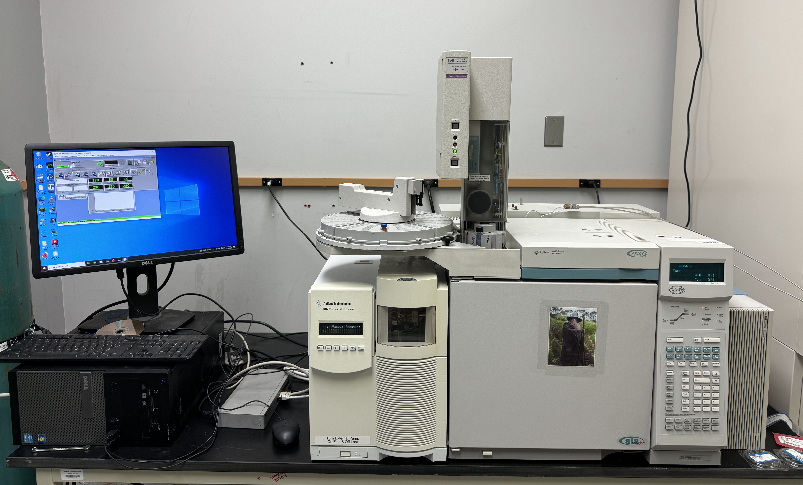
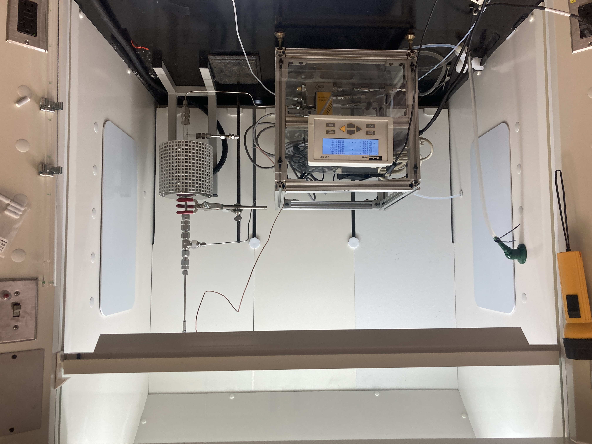
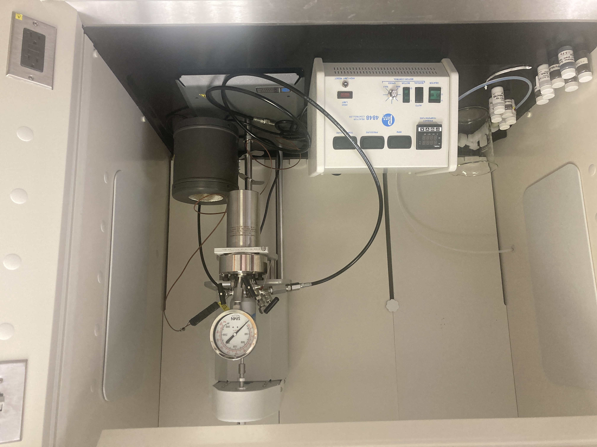

We have various facilities in the group and on campus for catalysis research. We also have access to national lab facilities via user proposals and collaboration.
Dedicated Equipment in the Xiao Group
• A GC-MS instrument (Gas Chromatography-Mass Spectrometry) to separate and detect unknown species in a mixture.
• A continuous flow fixed-bed reactor for methane coupling and ethane/propane dehydrogenation
• A continuous flow fixed-bed reactor for methanol oxidation and thermal runaway investigation
• An Agilent Gas Chromatograph with FID, TCD, liquid-phase autosampler, and gas-phase online sampler
• An Agilent HP 5973N Mass Selective Detector
• A Steady State Isotopic Transient Kinetic Analysis (SSITKA) instrument
• A high-pressure Parr reactor (Series 4560, 600 ml, 350 °C, 2000 psi)
• CO/H2 chemisorption and H2-O2 titration instruments
• TPD/TPR/TPO/TPSR (temperature-programmed desorption, reduction, oxidation and surface reaction) instruments
• Three High-temperature furnaces (up to 1200 °C)

Gas Chromatography-Mass Spectrometry

Continuous flow fixed-bed reactor

High-pressure Parr reactor